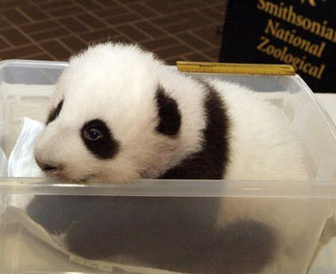

| Nombre | Oso Panda |
| Familia | Ursidae |
| Nombre Cientifico | Ailuropoda melanoleuca |
| Estado de conservación | Peligro de extinción |
| Habitat | 6 zonas montañosas de china |
| Alimentación | Gaures , Tigres , Tapires malayos |
| Población | Menos de 2.000 ejemplares |
El panda, oso panda o panda gigante (Ailuropoda melanoleuca) es una especie de mamífero del orden de los carnívoros. El estudio de su ADN lo engloba entre los miembros de la familia de los osos ,2 siendo el oso de anteojos su pariente más cercano, que pertenece a la subfamilia de los tremarctinos. Por otra parte, el panda rojo pertenece a una familia propia e independiente, Ailuridae. La especie está muy localizada. Nativo de China central, el panda gigante habita en regiones montañosas, principalmente las de Sichuan, hasta una altura de 3500
Este animal se distribuye en zonas montañosas de china muy reducidas por las zonas de Minshan, Qinling, Qionglai, Liangshan, Daxiangling y Xiaoxiangling.